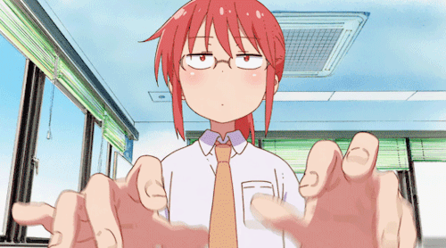

A Tohru é um dragão e uma empregada!

A Tohru é um Dragão da facção do caos. Por coincidencia enquanto estava preste a morrer foi encontrada e salva pela Kobayashi!

Kobayashi é uma assalariada que encontrou a Tohru embriagada nas montanhas!

Kanna mora com a Kobayashi-san e a Tohru!
Elma trabalha com a Kobayashi!

Takiya é amigo da Kobayashi a quant tempo?!

Fafnir é o gamer mais viciado de todos!

Ilulu trabalha em algum lugar por ai...

A Saikawa é louca pela Kanna!

Shouta é um mago!
Lucoa é uma deusa dragão!!
Developed by Eduardo
Site desenvolvido para trabalho escolar no curso tecnico Desenvolvimento de Sistema. Na Etec Sapopema. Localicado na Fazenda da Juta, São Paulo, Zona Leste.
